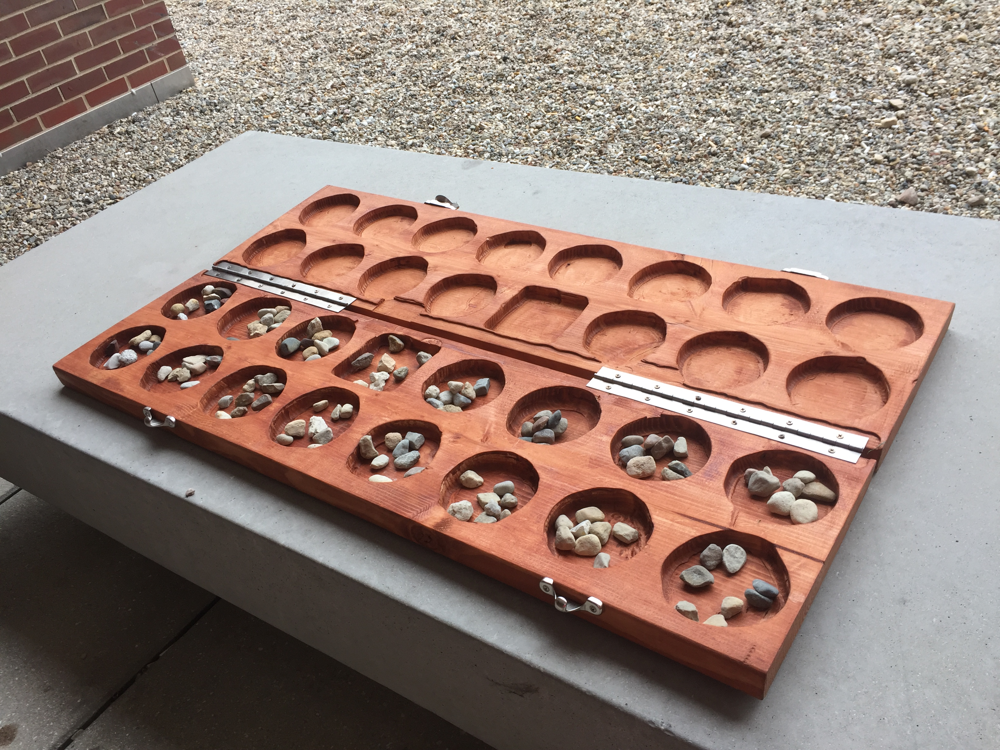
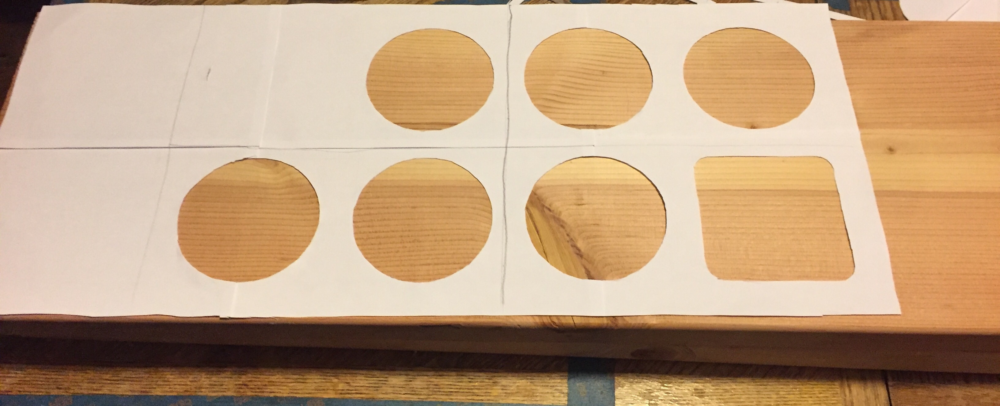
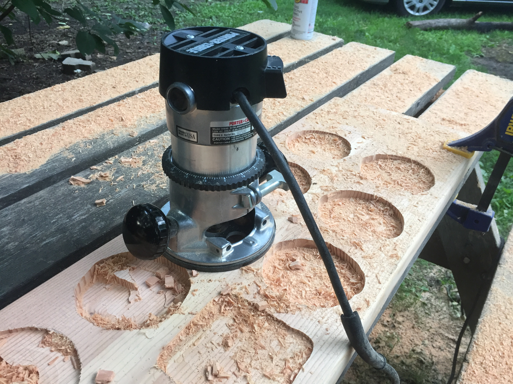
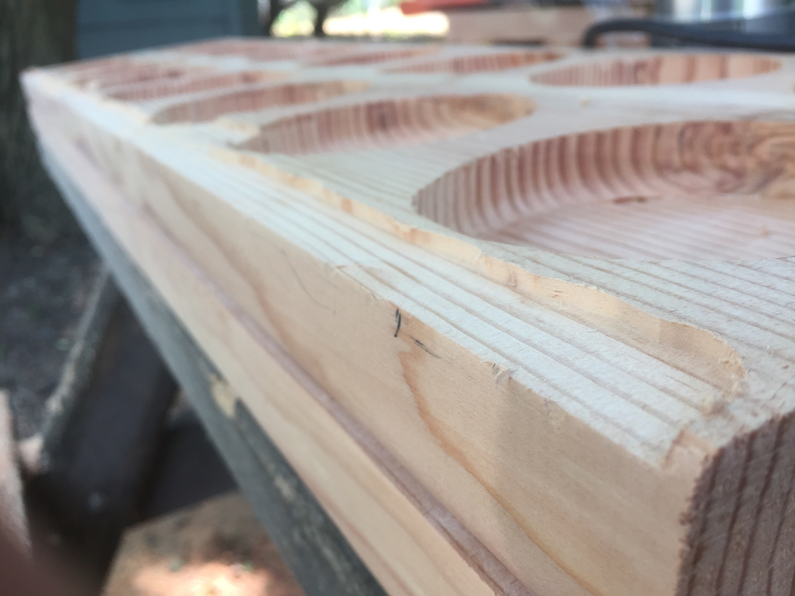

Bao la Kiswahili
Swahili Board Game
How to easily make a mediocre Bao la Kiswahili board game with some lumber and a router.
# Introduction
Bao la Kiswahili is a traditional mancala game played in East Africa, primarily by the Swahili people of the Kenyan and Tanzanian coasts. The game is well-known as one of the most complex mancalas and mastering the game bestows one with high respect. Each player exclusively controls two rows of eight mashimo, or “holes.” The fourth pit in each player's inner lap is the nyumba, or “house,” often distinguished by its square shape in contrast to the other, circular pits. Each player begins the game with 32 kete (“shells”) and tries to reduce their opponent’s possessions.
This is all one needs to know in order to construct a board; however, the rules of Bao are far more complex than elaborated here. More information can be found on Wikipedia or, incredibly, the mancala wiki called “Mancala World”.
# What you’ll need
- 64 rocks
-
Two
identical pieces of lumber sized to 1:4 ratio
I used two 2×12 boards about 48 inches long; however, this became quite bulky and I would recommend 2×10×40. - Router
- Straight bit, D = 3/4"
- Round bit, D = 1/2"
- Round-over bit, R = 3/8"
- 2 continuous hinges
- Latches or other locking mechanism
- Sandpaper
- Stain
- Safety glasses 😎
# Preparation
Measure out the locations for your cuts. I recommend using a speed square and compass to draw perfect circles on your lumber in the exact locations where you intend to cut; however, I had neither – so I created a template of seven circles and a square in Illustrator and transferred it to the wood.
The template visible in the above image (for a 2×12 board) can be downloaded as a PDF document here.
# Construction
# Excavation
Using the straight bit, I began boring out the circular markings. Taking care to never dig too deap for fear of overheating the router, I made repeated cuts about 1/8" deep – extending the router depth each time.
For the final depth, I used the round bit around the bottom rim of each circle in order to make a smooth curve. The interior of the bottom – not the rounded edges – was then smoothed with the straight bit.
Finally, I used the round-over bit on the top lip of each mshimo in order to get a round, smooth edge.
# Hinge preparation
In order to fit hinges that would close tightly, I cut shallow grooves along the inner edge of each board.
My grooves were a bit too deep for the continuous hinges I bought, and thus the hinges undergo excess strain when closed. I recommend you ensure the grooves are just deep enough to allow the hinge to be fully closed and nothing more.
# Finishing

I first sanded the boards thoroghly by hand, taking care to get the insides of each mshimo).
After sanding, I stained the boards. The stain I used as depicted in the photo at right was Varathane's Traditional Cherry. Of course, there is no proscribed “traditional” color of Bao boards, and regardless, no lumber you’re getting at a North American Home Depot is going to be the same as in East Africa.
The method I found most effective for applying stain (which I only perfected by the second board) was to get a brush soaked in stain and heavily lather the inner vertical edge of one mshimo at a time. This method allowed the stain to flow nad fill the bottom of the mshimo quickly, allowing me to rapidly sop up the stain without excess absorption.
# Adding the Hardware
I added the hinges within their grooves, taking special care to make sure they were parallel to each other and to the board itself. Next, I added two sash locks on the opening side, allowing the board to be closed securely.
With an operable board, I scavenged* 64 rocks and locked them within the board. And thus it was complete.